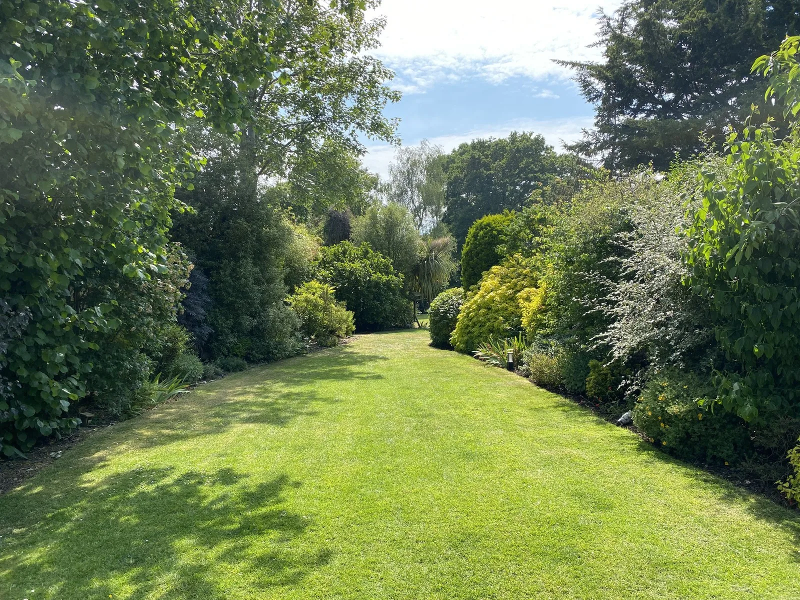
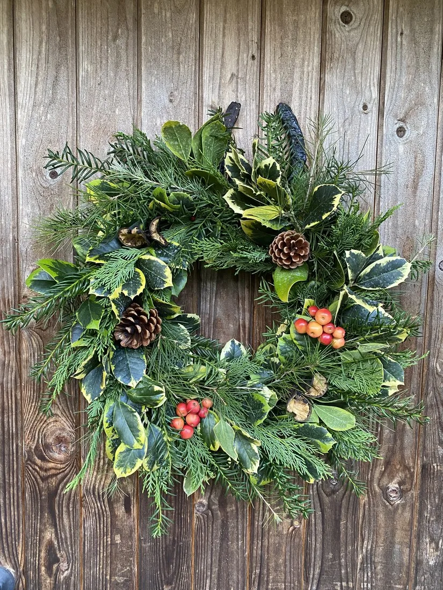
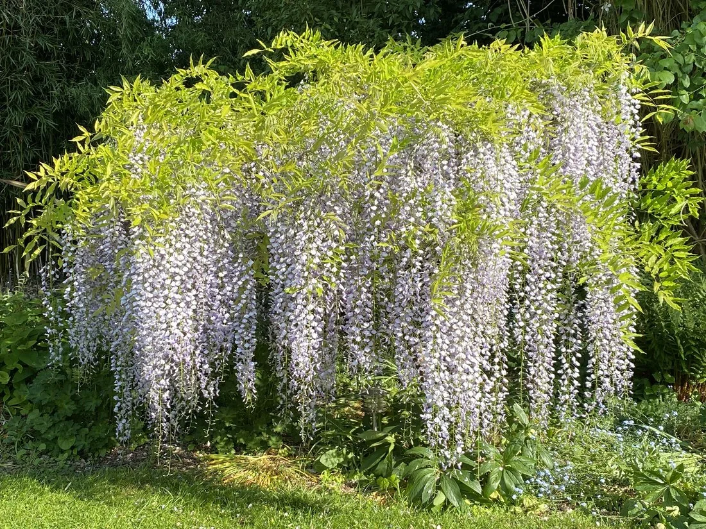
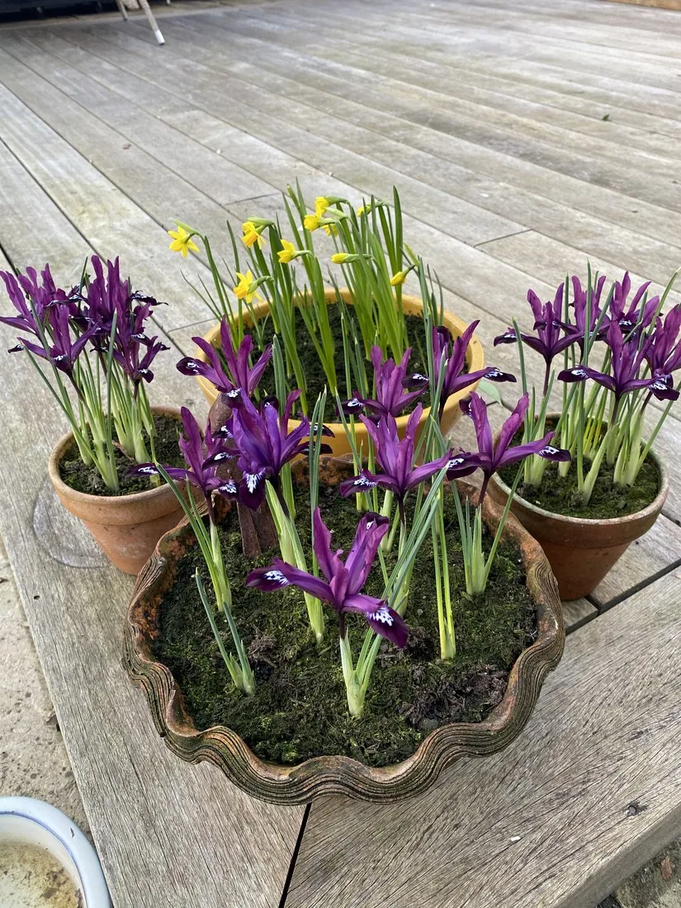
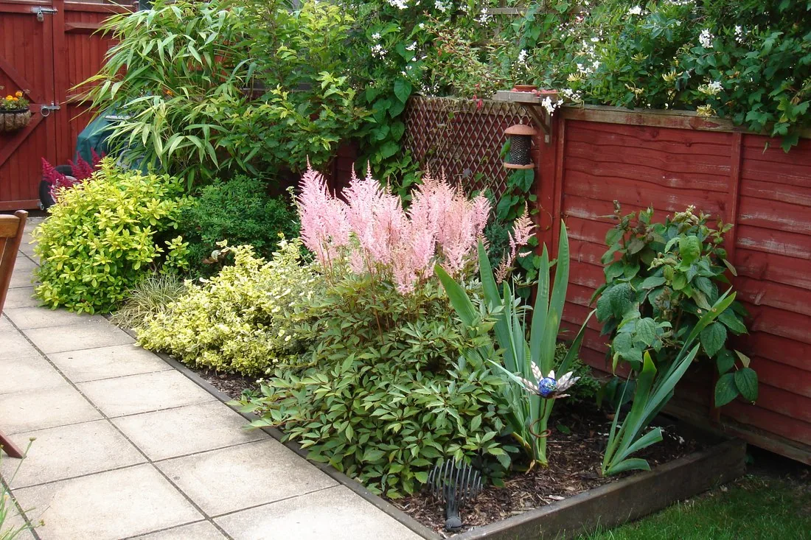

Beautiful gardens.
Thoughtfully cared for.
Personal, professional garden care in Denmead and the surrounding areas, whatever the season.


A beautiful welcome this Christmas.
Handmade Christmas wreaths, created with care in Hampshire. Every wreath is individual; explore examples of our work and enquire about availability.
A little care makes all the difference.
Expert care for every corner of your garden.
Pruning
Shrubs, roses, fruit and small trees; deadheading.
Planting
Seasonal bedding, perennials, bulbs and transplanting.
Lawn care
Mowing and neatly trimmed lawn edges.
Hedge cutting
Small hedges up to six feet high.
Border maintenance
Weeding, mulching, feeding, digging and plant division.
Border design
Planting plans, renovation and improvements.
Containers
Repotting, feeding, seasonal planting and holiday watering.
Houseplant care
Repotting, feeding and holiday watering.
Seasonal clearing
Leaf collection and clearing paths and patios.
Garden tidy-up
A full refresh, including sweeping, pruning and removing unwanted plants.
From the garden
A few of our favourite moments from the garden.



Garden care with a personal touch.
Based in Denmead, Hampshire, Fuzzybee provides year-round, personal garden care from an RHS-qualified professional with a passion for horticulture.
Whether you need regular maintenance or a one-off tidy, our visits are tailored to your garden. We work neatly, communicate clearly and agree pricing upfront. Please note that we do not take away green waste.
Let's talk about your garden.
Get in touch to arrange a free, no-obligation quote.